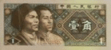

中国のお金・通貨
中国では「人民幣」（RMB レンミンビー）という単位です。１元＝１０角＝１００分
最もよく使われるのは「元」の単位ですが、元の下に「角」、その下に「分」という通貨単位があります。日本でも「円」の下に「銭」があるのと同じ感じだと思ってください。
現在「分」という単位は小さすぎてほとんど使われていないので、「１元＝１０角」が基本です。
現在の1元の価値「日本円」でのレートはこちら
通貨の種類
中国ではコイン（硬貨）の種類は少なく、ほとんどがお札（紙幣）で出回っています。現在流通している紙幣の種類は「元」の単位が６種類、「角」の単位が３種類です。日本同様以前に発行された古い紙幣も使えますが、旅行など短期滞在でお目にかかる機会は少ないかと思いますので、ここでは最も流通している通貨を紹介いたします。
１００元紙幣（中国では最大の通貨単位です）
５０元紙幣
２０元紙幣
１０元紙幣

５元紙幣
１元紙幣（主に中国北部や北京では多く流通しています）
５角紙幣（１元の２分の１の単位、紙幣の流通量はかなり減っています）
２角紙幣（現在では滅多にお目にかかれません）

１角紙幣（時々見かけます）
硬貨の種類
１元以下のお金（角）に対しては、現在コインが主流となっています。
１元硬貨 （主に中国南部では多く流通しています） 日本の５００円玉くらいの大きさです。
５角硬貨 色が金色（日本の５円玉に近い色）なので、すぐわかります。
１角硬貨 日本の１円玉によく似ています。旧式の１角硬貨で、少し厚く大き目のもあります。
以前使用されたいた「分」という単位（1分は１角の１０分の1）がありましたが、現在では単位が小さすぎるため使用できません。日本で言う「銭以下」の単位のようなものです。
人民元は、中国語で「ユェン」と言いますが、話し言葉で「クァイ」とも言い、角は中国語で「ジャオ」と言いますが、話し言葉で「毛」（マオ）とも言います。話し言葉ではほとんどこちらを使うので、覚えておきましょう。
値段の表記ですが、一般的には１０元の場合「１０．００」と表記される場合が多く、たとえば「２３．５０」なら、２３元と５角、という感じになります。また中国の市場やマーケットなどでは、「１斤」という単位が流通しています。たとえば、牛肉を買うにしても日本なら「１００ｇ」でいくら、という表記ですが、中国では「１斤（ジン）」５００ｇでいくら、という表記になっています。
観光で市場などで野菜や果物を買うといったケースは少ないと思いますが、価格の表記は一般的に「斤」で表示されているのでご注意ください。また価格の高いものや、お茶などについては、「リャン」という５０ｇ単位で売っている場合もあります。
５００ｇ＝１斤＝１０ リャン
中国旅行注意に戻す